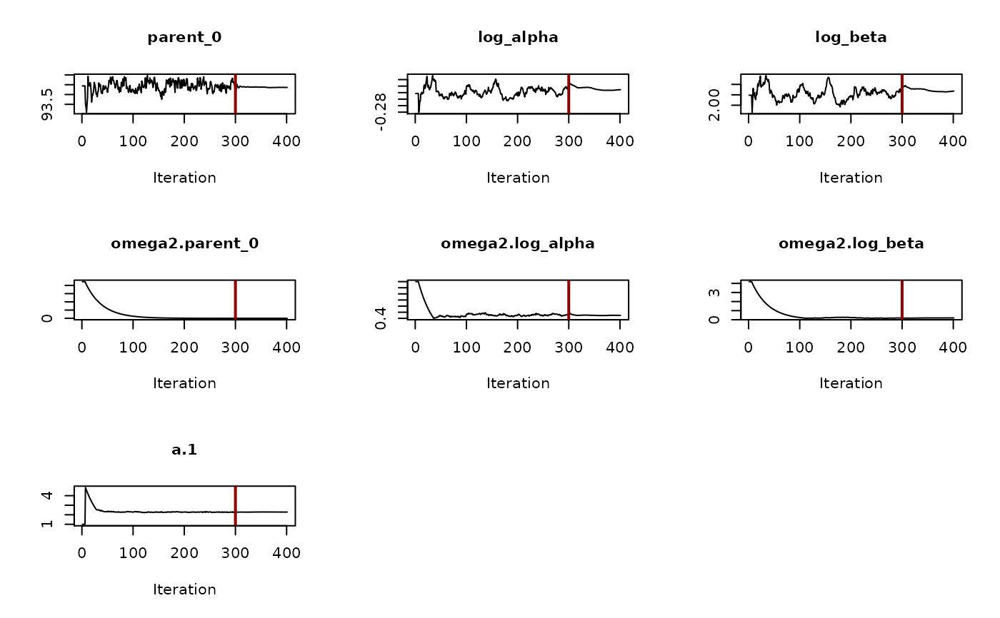
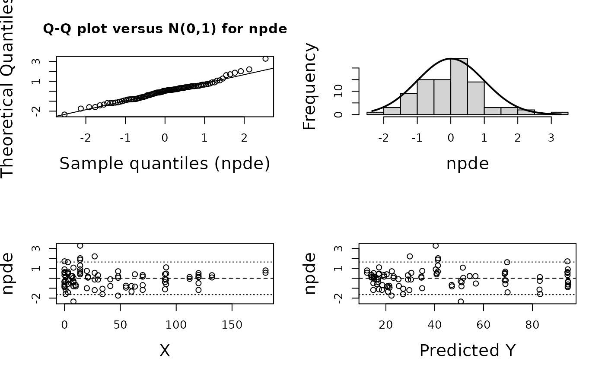
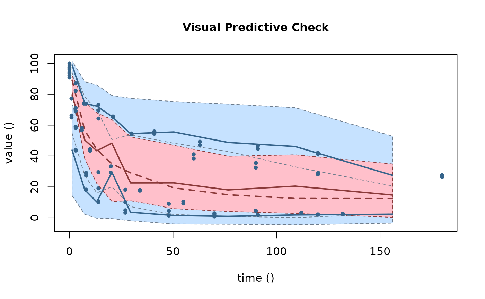
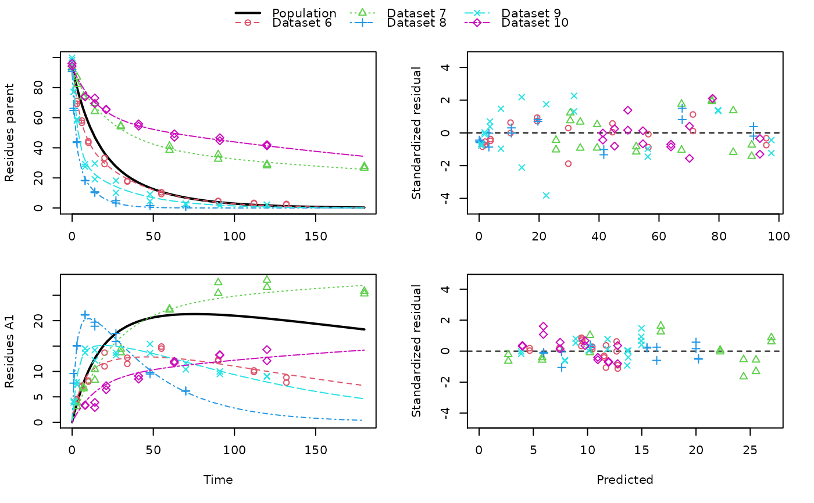

This function uses saemix::saemix() as a backend for fitting nonlinear mixed
effects models created from mmkin row objects using the Stochastic Approximation
Expectation Maximisation algorithm (SAEM).
saem(object, ...) # S3 method for mmkin saem( object, transformations = c("mkin", "saemix"), degparms_start = numeric(), solution_type = "auto", control = list(displayProgress = FALSE, print = FALSE, save = FALSE, save.graphs = FALSE), verbose = FALSE, quiet = FALSE, ... ) # S3 method for saem.mmkin print(x, digits = max(3, getOption("digits") - 3), ...) saemix_model( object, solution_type = "auto", transformations = c("mkin", "saemix"), degparms_start = numeric(), verbose = FALSE, ... ) saemix_data(object, verbose = FALSE, ...)
| object | An mmkin row object containing several fits of the same mkinmod model to different datasets |
|---|---|
| ... | Further parameters passed to saemix::saemixModel. |
| transformations | Per default, all parameter transformations are done in mkin. If this argument is set to 'saemix', parameter transformations are done in 'saemix' for the supported cases. Currently this is only supported in cases where the initial concentration of the parent is not fixed, SFO or DFOP is used for the parent and there is either no metabolite or one. |
| degparms_start | Parameter values given as a named numeric vector will be used to override the starting values obtained from the 'mmkin' object. |
| solution_type | Possibility to specify the solution type in case the automatic choice is not desired |
| control | Passed to saemix::saemix |
| verbose | Should we print information about created objects of type saemix::SaemixModel and saemix::SaemixData? |
| quiet | Should we suppress the messages saemix prints at the beginning and the end of the optimisation process? |
| x | An saem.mmkin object to print |
| digits | Number of digits to use for printing |
An S3 object of class 'saem.mmkin', containing the fitted saemix::SaemixObject as a list component named 'so'. The object also inherits from 'mixed.mmkin'.
An saemix::SaemixModel object.
An saemix::SaemixData object.
An mmkin row object is essentially a list of mkinfit objects that have been obtained by fitting the same model to a list of datasets using mkinfit.
Starting values for the fixed effects (population mean parameters, argument
psi0 of saemix::saemixModel() are the mean values of the parameters found
using mmkin.
# \dontrun{ ds <- lapply(experimental_data_for_UBA_2019[6:10], function(x) subset(x$data[c("name", "time", "value")])) names(ds) <- paste("Dataset", 6:10) f_mmkin_parent_p0_fixed <- mmkin("FOMC", ds, state.ini = c(parent = 100), fixed_initials = "parent", quiet = TRUE) f_saem_p0_fixed <- saem(f_mmkin_parent_p0_fixed)#> Running main SAEM algorithm #> [1] "Mon Feb 15 17:12:32 2021" #> .... #> Minimisation finished #> [1] "Mon Feb 15 17:12:34 2021"f_mmkin_parent <- mmkin(c("SFO", "FOMC", "DFOP"), ds, quiet = TRUE) f_saem_sfo <- saem(f_mmkin_parent["SFO", ])#> Running main SAEM algorithm #> [1] "Mon Feb 15 17:12:35 2021" #> .... #> Minimisation finished #> [1] "Mon Feb 15 17:12:36 2021"f_saem_fomc <- saem(f_mmkin_parent["FOMC", ])#> Running main SAEM algorithm #> [1] "Mon Feb 15 17:12:36 2021" #> .... #> Minimisation finished #> [1] "Mon Feb 15 17:12:38 2021"f_saem_dfop <- saem(f_mmkin_parent["DFOP", ])#> Running main SAEM algorithm #> [1] "Mon Feb 15 17:12:39 2021" #> .... #> Minimisation finished #> [1] "Mon Feb 15 17:12:42 2021"# The returned saem.mmkin object contains an SaemixObject, therefore we can use # functions from saemix library(saemix)#> #>#> Error in compare.saemix(list(f_saem_sfo$so, f_saem_fomc$so, f_saem_dfop$so)): 'compare.saemix' requires at least two models.#> Plotting convergence plots#> Plotting individual fits#> Simulating data using nsim = 1000 simulated datasets #> Computing WRES and npde . #> Plotting npde#> --------------------------------------------- #> Distribution of npde: #> mean= -0.01528 (SE= 0.098 ) #> variance= 0.862 (SE= 0.13 ) #> skewness= 0.5016 #> kurtosis= 1.18 #> --------------------------------------------- #> #> Statistical tests #> Wilcoxon signed rank test : 0.679 #> Fisher variance test : 0.36 #> SW test of normality : 0.0855 . #> Global adjusted p-value : 0.257 #> --- #> Signif. codes: '***' 0.001 '**' 0.01 '*' 0.05 '.' 0.1 #> ---------------------------------------------#> Performing simulations under the model. #> Plotting VPC #> Method used for VPC: binning by quantiles on X , dividing into the following intervals #> Interval Centered.On #> 1 (-1,3] 1.3 #> 2 (3,8] 7.4 #> 3 (8,14] 13.2 #> 4 (14,21] 20.5 #> 5 (21,37.7] 29.5 #> 6 (37.7,60] 50.4 #> 7 (60,90] 76.6 #> 8 (90,120] 109.0 #> 9 (120,180] 156.0f_mmkin_parent_tc <- update(f_mmkin_parent, error_model = "tc") f_saem_fomc_tc <- saem(f_mmkin_parent_tc["FOMC", ])#> Running main SAEM algorithm #> [1] "Mon Feb 15 17:12:44 2021" #> .... #> Minimisation finished #> [1] "Mon Feb 15 17:12:49 2021"#> Error in compare.saemix(list(f_saem_fomc$so, f_saem_fomc_tc$so)): 'compare.saemix' requires at least two models.#>#>#># The following fit uses analytical solutions for SFO-SFO and DFOP-SFO, # and compiled ODEs for FOMC that are much slower f_mmkin <- mmkin(list( "SFO-SFO" = sfo_sfo, "FOMC-SFO" = fomc_sfo, "DFOP-SFO" = dfop_sfo), ds, quiet = TRUE) # saem fits of SFO-SFO and DFOP-SFO to these data take about five seconds # each on this system, as we use analytical solutions written for saemix. # When using the analytical solutions written for mkin this took around # four minutes f_saem_sfo_sfo <- saem(f_mmkin["SFO-SFO", ])#> Running main SAEM algorithm #> [1] "Mon Feb 15 17:12:51 2021" #> .... #> Minimisation finished #> [1] "Mon Feb 15 17:12:56 2021"f_saem_dfop_sfo <- saem(f_mmkin["DFOP-SFO", ])#> Running main SAEM algorithm #> [1] "Mon Feb 15 17:12:56 2021" #> .... #> Minimisation finished #> [1] "Mon Feb 15 17:13:05 2021"#> Kinetic nonlinear mixed-effects model fit by SAEM #> Structural model: #> d_parent/dt = - ((k1 * g * exp(-k1 * time) + k2 * (1 - g) * exp(-k2 * #> time)) / (g * exp(-k1 * time) + (1 - g) * exp(-k2 * time))) #> * parent #> d_A1/dt = + f_parent_to_A1 * ((k1 * g * exp(-k1 * time) + k2 * (1 - g) #> * exp(-k2 * time)) / (g * exp(-k1 * time) + (1 - g) * #> exp(-k2 * time))) * parent - k_A1 * A1 #> #> Data: #> 170 observations of 2 variable(s) grouped in 5 datasets #> #> Likelihood computed by importance sampling #> AIC BIC logLik #> 841.6 836.5 -407.8 #> #> Fitted parameters: #> estimate lower upper #> parent_0 93.76647 91.15312 96.3798 #> log_k_A1 -6.13235 -8.45788 -3.8068 #> f_parent_qlogis -0.97364 -1.36940 -0.5779 #> log_k1 -2.53176 -3.80372 -1.2598 #> log_k2 -3.58667 -5.29524 -1.8781 #> g_qlogis 0.01238 -1.07968 1.1044 #> Var.parent_0 7.61106 -3.34955 18.5717 #> Var.log_k_A1 4.64679 -2.73133 12.0249 #> Var.f_parent_qlogis 0.19693 -0.05498 0.4488 #> Var.log_k1 2.01717 -0.51980 4.5542 #> Var.log_k2 3.63412 -0.92964 8.1979 #> Var.g_qlogis 0.20045 -0.97425 1.3751 #> a.1 1.88335 1.66636 2.1004 #> SD.parent_0 2.75881 0.77234 4.7453 #> SD.log_k_A1 2.15564 0.44429 3.8670 #> SD.f_parent_qlogis 0.44377 0.15994 0.7276 #> SD.log_k1 1.42027 0.52714 2.3134 #> SD.log_k2 1.90634 0.70934 3.1033 #> SD.g_qlogis 0.44771 -0.86417 1.7596#> saemix version used for fitting: 3.1.9000 #> mkin version used for pre-fitting: 1.0.3.9000 #> R version used for fitting: 4.0.3 #> Date of fit: Mon Feb 15 17:13:05 2021 #> Date of summary: Mon Feb 15 17:13:06 2021 #> #> Equations: #> d_parent/dt = - ((k1 * g * exp(-k1 * time) + k2 * (1 - g) * exp(-k2 * #> time)) / (g * exp(-k1 * time) + (1 - g) * exp(-k2 * time))) #> * parent #> d_A1/dt = + f_parent_to_A1 * ((k1 * g * exp(-k1 * time) + k2 * (1 - g) #> * exp(-k2 * time)) / (g * exp(-k1 * time) + (1 - g) * #> exp(-k2 * time))) * parent - k_A1 * A1 #> #> Data: #> 170 observations of 2 variable(s) grouped in 5 datasets #> #> Model predictions using solution type analytical #> #> Fitted in 8.985 s using 300, 100 iterations #> #> Variance model: Constant variance #> #> Mean of starting values for individual parameters: #> parent_0 log_k_A1 f_parent_qlogis log_k1 log_k2 #> 93.8102 -9.7647 -0.9711 -1.8799 -4.2708 #> g_qlogis #> 0.1356 #> #> Fixed degradation parameter values: #> None #> #> Results: #> #> Likelihood computed by importance sampling #> AIC BIC logLik #> 841.6 836.5 -407.8 #> #> Optimised parameters: #> est. lower upper #> parent_0 93.76647 91.153 96.3798 #> log_k_A1 -6.13235 -8.458 -3.8068 #> f_parent_qlogis -0.97364 -1.369 -0.5779 #> log_k1 -2.53176 -3.804 -1.2598 #> log_k2 -3.58667 -5.295 -1.8781 #> g_qlogis 0.01238 -1.080 1.1044 #> #> Correlation: #> prnt_0 lg__A1 f_prn_ log_k1 log_k2 #> log_k_A1 -0.013 #> f_parent_qlogis -0.025 0.050 #> log_k1 0.030 0.000 -0.005 #> log_k2 0.010 0.005 -0.003 0.032 #> g_qlogis -0.063 -0.015 0.010 -0.167 -0.177 #> #> Random effects: #> est. lower upper #> SD.parent_0 2.7588 0.7723 4.7453 #> SD.log_k_A1 2.1556 0.4443 3.8670 #> SD.f_parent_qlogis 0.4438 0.1599 0.7276 #> SD.log_k1 1.4203 0.5271 2.3134 #> SD.log_k2 1.9063 0.7093 3.1033 #> SD.g_qlogis 0.4477 -0.8642 1.7596 #> #> Variance model: #> est. lower upper #> a.1 1.883 1.666 2.1 #> #> Backtransformed parameters: #> est. lower upper #> parent_0 93.766473 9.115e+01 96.37983 #> k_A1 0.002171 2.122e-04 0.02222 #> f_parent_to_A1 0.274156 2.027e-01 0.35942 #> k1 0.079519 2.229e-02 0.28371 #> k2 0.027691 5.015e-03 0.15288 #> g 0.503095 2.536e-01 0.75109 #> #> Resulting formation fractions: #> ff #> parent_A1 0.2742 #> parent_sink 0.7258 #> #> Estimated disappearance times: #> DT50 DT90 DT50back DT50_k1 DT50_k2 #> parent 14.11 59.53 17.92 8.717 25.03 #> A1 319.21 1060.38 NA NA NA #> #> Data: #> ds name time observed predicted residual std standardized #> Dataset 6 parent 0 97.2 95.79523 -1.40477 1.883 -0.745888 #> Dataset 6 parent 0 96.4 95.79523 -0.60477 1.883 -0.321114 #> Dataset 6 parent 3 71.1 71.32042 0.22042 1.883 0.117035 #> Dataset 6 parent 3 69.2 71.32042 2.12042 1.883 1.125873 #> Dataset 6 parent 6 58.1 56.45256 -1.64744 1.883 -0.874739 #> Dataset 6 parent 6 56.6 56.45256 -0.14744 1.883 -0.078288 #> Dataset 6 parent 10 44.4 44.48523 0.08523 1.883 0.045257 #> Dataset 6 parent 10 43.4 44.48523 1.08523 1.883 0.576224 #> Dataset 6 parent 20 33.3 29.75774 -3.54226 1.883 -1.880826 #> Dataset 6 parent 20 29.2 29.75774 0.55774 1.883 0.296141 #> Dataset 6 parent 34 17.6 19.35710 1.75710 1.883 0.932966 #> Dataset 6 parent 34 18.0 19.35710 1.35710 1.883 0.720579 #> Dataset 6 parent 55 10.5 10.48443 -0.01557 1.883 -0.008266 #> Dataset 6 parent 55 9.3 10.48443 1.18443 1.883 0.628895 #> Dataset 6 parent 90 4.5 3.78622 -0.71378 1.883 -0.378995 #> Dataset 6 parent 90 4.7 3.78622 -0.91378 1.883 -0.485188 #> Dataset 6 parent 112 3.0 1.99608 -1.00392 1.883 -0.533048 #> Dataset 6 parent 112 3.4 1.99608 -1.40392 1.883 -0.745435 #> Dataset 6 parent 132 2.3 1.11539 -1.18461 1.883 -0.628990 #> Dataset 6 parent 132 2.7 1.11539 -1.58461 1.883 -0.841377 #> Dataset 6 A1 3 4.3 4.66132 0.36132 1.883 0.191849 #> Dataset 6 A1 3 4.6 4.66132 0.06132 1.883 0.032559 #> Dataset 6 A1 6 7.0 7.41087 0.41087 1.883 0.218157 #> Dataset 6 A1 6 7.2 7.41087 0.21087 1.883 0.111964 #> Dataset 6 A1 10 8.2 9.50878 1.30878 1.883 0.694921 #> Dataset 6 A1 10 8.0 9.50878 1.50878 1.883 0.801114 #> Dataset 6 A1 20 11.0 11.69902 0.69902 1.883 0.371157 #> Dataset 6 A1 20 13.7 11.69902 -2.00098 1.883 -1.062455 #> Dataset 6 A1 34 11.5 12.67784 1.17784 1.883 0.625396 #> Dataset 6 A1 34 12.7 12.67784 -0.02216 1.883 -0.011765 #> Dataset 6 A1 55 14.9 12.78556 -2.11444 1.883 -1.122701 #> Dataset 6 A1 55 14.5 12.78556 -1.71444 1.883 -0.910314 #> Dataset 6 A1 90 12.1 11.52954 -0.57046 1.883 -0.302898 #> Dataset 6 A1 90 12.3 11.52954 -0.77046 1.883 -0.409092 #> Dataset 6 A1 112 9.9 10.43825 0.53825 1.883 0.285793 #> Dataset 6 A1 112 10.2 10.43825 0.23825 1.883 0.126503 #> Dataset 6 A1 132 8.8 9.42830 0.62830 1.883 0.333609 #> Dataset 6 A1 132 7.8 9.42830 1.62830 1.883 0.864577 #> Dataset 7 parent 0 93.6 90.91477 -2.68523 1.883 -1.425772 #> Dataset 7 parent 0 92.3 90.91477 -1.38523 1.883 -0.735514 #> Dataset 7 parent 3 87.0 84.76874 -2.23126 1.883 -1.184726 #> Dataset 7 parent 3 82.2 84.76874 2.56874 1.883 1.363919 #> Dataset 7 parent 7 74.0 77.62735 3.62735 1.883 1.926003 #> Dataset 7 parent 7 73.9 77.62735 3.72735 1.883 1.979100 #> Dataset 7 parent 14 64.2 67.52266 3.32266 1.883 1.764224 #> Dataset 7 parent 14 69.5 67.52266 -1.97734 1.883 -1.049904 #> Dataset 7 parent 30 54.0 52.41949 -1.58051 1.883 -0.839202 #> Dataset 7 parent 30 54.6 52.41949 -2.18051 1.883 -1.157783 #> Dataset 7 parent 60 41.1 39.36582 -1.73418 1.883 -0.920794 #> Dataset 7 parent 60 38.4 39.36582 0.96582 1.883 0.512818 #> Dataset 7 parent 90 32.5 33.75388 1.25388 1.883 0.665771 #> Dataset 7 parent 90 35.5 33.75388 -1.74612 1.883 -0.927132 #> Dataset 7 parent 120 28.1 30.41716 2.31716 1.883 1.230335 #> Dataset 7 parent 120 29.0 30.41716 1.41716 1.883 0.752464 #> Dataset 7 parent 180 26.5 25.66046 -0.83954 1.883 -0.445767 #> Dataset 7 parent 180 27.6 25.66046 -1.93954 1.883 -1.029832 #> Dataset 7 A1 3 3.9 2.69355 -1.20645 1.883 -0.640585 #> Dataset 7 A1 3 3.1 2.69355 -0.40645 1.883 -0.215811 #> Dataset 7 A1 7 6.9 5.81807 -1.08193 1.883 -0.574470 #> Dataset 7 A1 7 6.6 5.81807 -0.78193 1.883 -0.415180 #> Dataset 7 A1 14 10.4 10.22529 -0.17471 1.883 -0.092767 #> Dataset 7 A1 14 8.3 10.22529 1.92529 1.883 1.022265 #> Dataset 7 A1 30 14.4 16.75484 2.35484 1.883 1.250345 #> Dataset 7 A1 30 13.7 16.75484 3.05484 1.883 1.622022 #> Dataset 7 A1 60 22.1 22.22540 0.12540 1.883 0.066583 #> Dataset 7 A1 60 22.3 22.22540 -0.07460 1.883 -0.039610 #> Dataset 7 A1 90 27.5 24.38799 -3.11201 1.883 -1.652376 #> Dataset 7 A1 90 25.4 24.38799 -1.01201 1.883 -0.537344 #> Dataset 7 A1 120 28.0 25.53294 -2.46706 1.883 -1.309927 #> Dataset 7 A1 120 26.6 25.53294 -1.06706 1.883 -0.566572 #> Dataset 7 A1 180 25.8 26.94943 1.14943 1.883 0.610309 #> Dataset 7 A1 180 25.3 26.94943 1.64943 1.883 0.875793 #> Dataset 8 parent 0 91.9 91.53246 -0.36754 1.883 -0.195151 #> Dataset 8 parent 0 90.8 91.53246 0.73246 1.883 0.388914 #> Dataset 8 parent 1 64.9 67.73197 2.83197 1.883 1.503686 #> Dataset 8 parent 1 66.2 67.73197 1.53197 1.883 0.813428 #> Dataset 8 parent 3 43.5 41.58448 -1.91552 1.883 -1.017081 #> Dataset 8 parent 3 44.1 41.58448 -2.51552 1.883 -1.335662 #> Dataset 8 parent 8 18.3 19.62286 1.32286 1.883 0.702395 #> Dataset 8 parent 8 18.1 19.62286 1.52286 1.883 0.808588 #> Dataset 8 parent 14 10.2 10.77819 0.57819 1.883 0.306999 #> Dataset 8 parent 14 10.8 10.77819 -0.02181 1.883 -0.011582 #> Dataset 8 parent 27 4.9 3.26977 -1.63023 1.883 -0.865599 #> Dataset 8 parent 27 3.3 3.26977 -0.03023 1.883 -0.016051 #> Dataset 8 parent 48 1.6 0.48024 -1.11976 1.883 -0.594557 #> Dataset 8 parent 48 1.5 0.48024 -1.01976 1.883 -0.541460 #> Dataset 8 parent 70 1.1 0.06438 -1.03562 1.883 -0.549881 #> Dataset 8 parent 70 0.9 0.06438 -0.83562 1.883 -0.443688 #> Dataset 8 A1 1 9.6 7.61539 -1.98461 1.883 -1.053761 #> Dataset 8 A1 1 7.7 7.61539 -0.08461 1.883 -0.044923 #> Dataset 8 A1 3 15.0 15.47954 0.47954 1.883 0.254622 #> Dataset 8 A1 3 15.1 15.47954 0.37954 1.883 0.201525 #> Dataset 8 A1 8 21.2 20.22616 -0.97384 1.883 -0.517075 #> Dataset 8 A1 8 21.1 20.22616 -0.87384 1.883 -0.463979 #> Dataset 8 A1 14 19.7 20.00067 0.30067 1.883 0.159645 #> Dataset 8 A1 14 18.9 20.00067 1.10067 1.883 0.584419 #> Dataset 8 A1 27 17.5 16.38142 -1.11858 1.883 -0.593928 #> Dataset 8 A1 27 15.9 16.38142 0.48142 1.883 0.255620 #> Dataset 8 A1 48 9.5 10.25357 0.75357 1.883 0.400124 #> Dataset 8 A1 48 9.8 10.25357 0.45357 1.883 0.240833 #> Dataset 8 A1 70 6.2 5.95728 -0.24272 1.883 -0.128878 #> Dataset 8 A1 70 6.1 5.95728 -0.14272 1.883 -0.075781 #> Dataset 9 parent 0 99.8 97.47274 -2.32726 1.883 -1.235697 #> Dataset 9 parent 0 98.3 97.47274 -0.82726 1.883 -0.439246 #> Dataset 9 parent 1 77.1 79.72257 2.62257 1.883 1.392500 #> Dataset 9 parent 1 77.2 79.72257 2.52257 1.883 1.339404 #> Dataset 9 parent 3 59.0 56.26497 -2.73503 1.883 -1.452212 #> Dataset 9 parent 3 58.1 56.26497 -1.83503 1.883 -0.974342 #> Dataset 9 parent 8 27.4 31.66985 4.26985 1.883 2.267151 #> Dataset 9 parent 8 29.2 31.66985 2.46985 1.883 1.311410 #> Dataset 9 parent 14 19.1 22.39789 3.29789 1.883 1.751071 #> Dataset 9 parent 14 29.6 22.39789 -7.20211 1.883 -3.824090 #> Dataset 9 parent 27 10.1 14.21758 4.11758 1.883 2.186301 #> Dataset 9 parent 27 18.2 14.21758 -3.98242 1.883 -2.114537 #> Dataset 9 parent 48 4.5 7.27921 2.77921 1.883 1.475671 #> Dataset 9 parent 48 9.1 7.27921 -1.82079 1.883 -0.966780 #> Dataset 9 parent 70 2.3 3.61470 1.31470 1.883 0.698065 #> Dataset 9 parent 70 2.9 3.61470 0.71470 1.883 0.379485 #> Dataset 9 parent 91 2.0 1.85303 -0.14697 1.883 -0.078038 #> Dataset 9 parent 91 1.8 1.85303 0.05303 1.883 0.028155 #> Dataset 9 parent 120 2.0 0.73645 -1.26355 1.883 -0.670906 #> Dataset 9 parent 120 2.2 0.73645 -1.46355 1.883 -0.777099 #> Dataset 9 A1 1 4.2 3.87843 -0.32157 1.883 -0.170743 #> Dataset 9 A1 1 3.9 3.87843 -0.02157 1.883 -0.011453 #> Dataset 9 A1 3 7.4 8.90535 1.50535 1.883 0.799291 #> Dataset 9 A1 3 7.9 8.90535 1.00535 1.883 0.533807 #> Dataset 9 A1 8 14.5 13.75172 -0.74828 1.883 -0.397312 #> Dataset 9 A1 8 13.7 13.75172 0.05172 1.883 0.027462 #> Dataset 9 A1 14 14.2 14.97541 0.77541 1.883 0.411715 #> Dataset 9 A1 14 12.2 14.97541 2.77541 1.883 1.473650 #> Dataset 9 A1 27 13.7 14.94728 1.24728 1.883 0.662266 #> Dataset 9 A1 27 13.2 14.94728 1.74728 1.883 0.927750 #> Dataset 9 A1 48 13.6 13.66078 0.06078 1.883 0.032272 #> Dataset 9 A1 48 15.4 13.66078 -1.73922 1.883 -0.923470 #> Dataset 9 A1 70 10.4 11.84899 1.44899 1.883 0.769365 #> Dataset 9 A1 70 11.6 11.84899 0.24899 1.883 0.132204 #> Dataset 9 A1 91 10.0 10.09177 0.09177 1.883 0.048727 #> Dataset 9 A1 91 9.5 10.09177 0.59177 1.883 0.314211 #> Dataset 9 A1 120 9.1 7.91379 -1.18621 1.883 -0.629841 #> Dataset 9 A1 120 9.0 7.91379 -1.08621 1.883 -0.576744 #> Dataset 10 parent 0 96.1 93.65257 -2.44743 1.883 -1.299505 #> Dataset 10 parent 0 94.3 93.65257 -0.64743 1.883 -0.343763 #> Dataset 10 parent 8 73.9 77.85906 3.95906 1.883 2.102132 #> Dataset 10 parent 8 73.9 77.85906 3.95906 1.883 2.102132 #> Dataset 10 parent 14 69.4 70.17143 0.77143 1.883 0.409606 #> Dataset 10 parent 14 73.1 70.17143 -2.92857 1.883 -1.554974 #> Dataset 10 parent 21 65.6 63.99188 -1.60812 1.883 -0.853862 #> Dataset 10 parent 21 65.3 63.99188 -1.30812 1.883 -0.694572 #> Dataset 10 parent 41 55.9 54.64292 -1.25708 1.883 -0.667467 #> Dataset 10 parent 41 54.4 54.64292 0.24292 1.883 0.128985 #> Dataset 10 parent 63 47.0 49.61303 2.61303 1.883 1.387433 #> Dataset 10 parent 63 49.3 49.61303 0.31303 1.883 0.166207 #> Dataset 10 parent 91 44.7 45.17807 0.47807 1.883 0.253839 #> Dataset 10 parent 91 46.7 45.17807 -1.52193 1.883 -0.808096 #> Dataset 10 parent 120 42.1 41.27970 -0.82030 1.883 -0.435552 #> Dataset 10 parent 120 41.3 41.27970 -0.02030 1.883 -0.010778 #> Dataset 10 A1 8 3.3 3.99294 0.69294 1.883 0.367929 #> Dataset 10 A1 8 3.4 3.99294 0.59294 1.883 0.314832 #> Dataset 10 A1 14 3.9 5.92756 2.02756 1.883 1.076570 #> Dataset 10 A1 14 2.9 5.92756 3.02756 1.883 1.607538 #> Dataset 10 A1 21 6.4 7.47313 1.07313 1.883 0.569799 #> Dataset 10 A1 21 7.2 7.47313 0.27313 1.883 0.145025 #> Dataset 10 A1 41 9.1 9.76819 0.66819 1.883 0.354786 #> Dataset 10 A1 41 8.5 9.76819 1.26819 1.883 0.673367 #> Dataset 10 A1 63 11.7 10.94733 -0.75267 1.883 -0.399643 #> Dataset 10 A1 63 12.0 10.94733 -1.05267 1.883 -0.558933 #> Dataset 10 A1 91 13.3 11.93773 -1.36227 1.883 -0.723321 #> Dataset 10 A1 91 13.2 11.93773 -1.26227 1.883 -0.670224 #> Dataset 10 A1 120 14.3 12.77666 -1.52334 1.883 -0.808847 #> Dataset 10 A1 120 12.1 12.77666 0.67666 1.883 0.359282# The following takes about 6 minutes #f_saem_dfop_sfo_deSolve <- saem(f_mmkin["DFOP-SFO", ], solution_type = "deSolve", # control = list(nbiter.saemix = c(200, 80), nbdisplay = 10)) #saemix::compare.saemix(list( # f_saem_dfop_sfo$so, # f_saem_dfop_sfo_deSolve$so)) # If the model supports it, we can also use eigenvalue based solutions, which # take a similar amount of time #f_saem_sfo_sfo_eigen <- saem(f_mmkin["SFO-SFO", ], solution_type = "eigen", # control = list(nbiter.saemix = c(200, 80), nbdisplay = 10)) # }